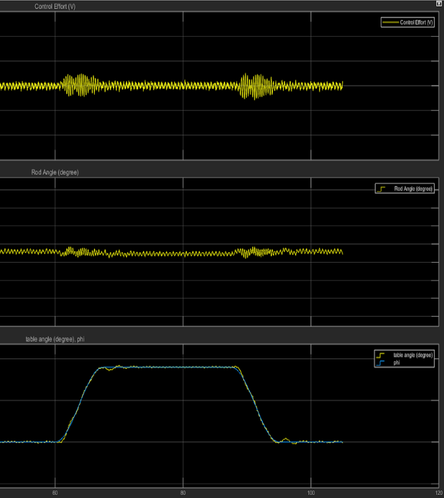
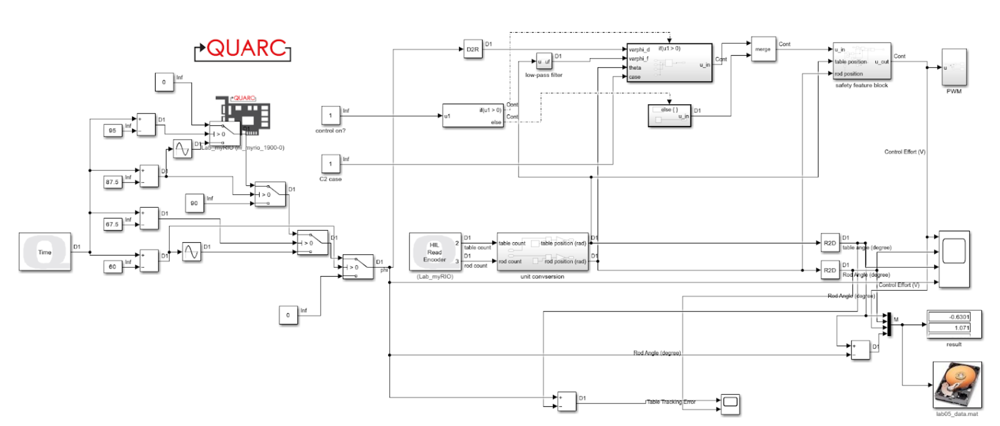
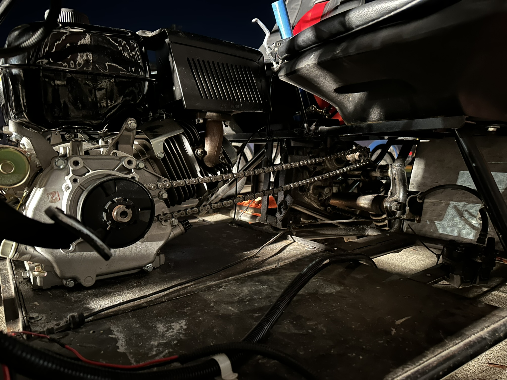
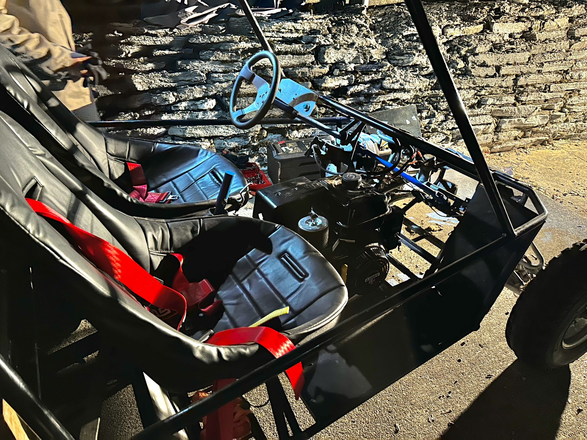
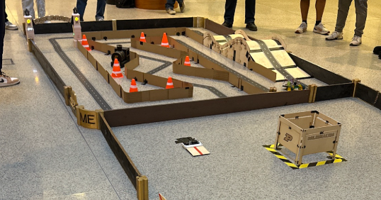
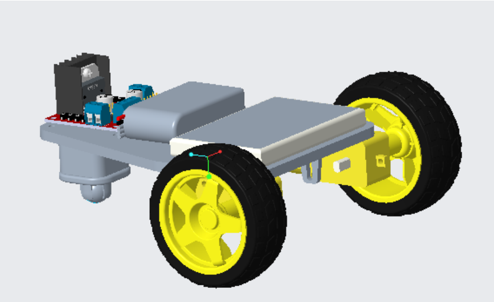

I made this one mostly as a novelty item that I could use as a gift, but it has some potential to be an educational toy.
You can spin it by blowing into the top or flicking the flywheel. I designed the parts in PTC Creo to try something new
and 3D printed everything except the bearings, rubber valve balls and bolts. All components slide or snap together so I
could assemble a bunch of these consistently.
Rotary Inverted Pendulum Control


I designed and tuned a two-loop feedback controller to stabilize this rotary inverted pendulum. The system consists of a
vertical rod mounted to a pivot with an encoder, all attached to a servo-driven table. A sixth-order outer loop controller
stabilizes the rod while a third-order inner loop manages the faster table dynamics. The control functions were developed
using Lagrangian mechanics to model the system, followed by linearization and parameter identification through
experimental data and least squares estimation. The final controller was able to track a timed trajectory, moving the
table 90 degrees in 7.5 seconds while maintaining a tracking error within 3 degrees.
Custom UTV


The UTV rolling frame was purchased used from Facebook marketplace where the seller had hand welded it from tubes.
From this, I fabricated engine mounts and installed a 15HP single cylinder engine. I then laser-cut sprockets to
connect the engine to a Polaris transmission via a centrifugal clutch and chain. The end result is capable off road
and on steep hills, carries up to 4 passengers and reaches 35 mph on flat ground.
Blynk IoT RC Car


This project was built for a small undergraduate competition where the RC car had to navigate a circuit with ramps and obstacles. I designed and built the vehicle using a 3D-printed PLA chassis and programmed it in the Arduino IDE. It’s powered by two geared DC motors and controlled via Wi-Fi using the Blynk IoT platform on a smartphone. The ESP32 microcontroller receives commands from the app and sends signals through an L298N motor driver to control direction and speed. The car won the competition with the fastest time on the course, completing all sections including the ramp.